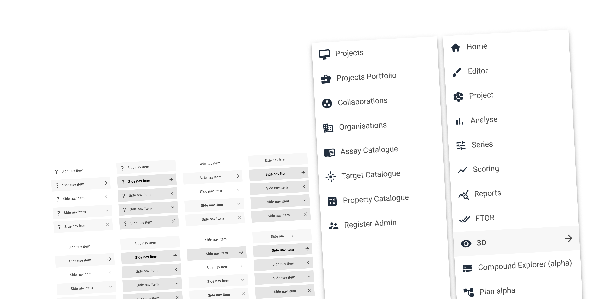
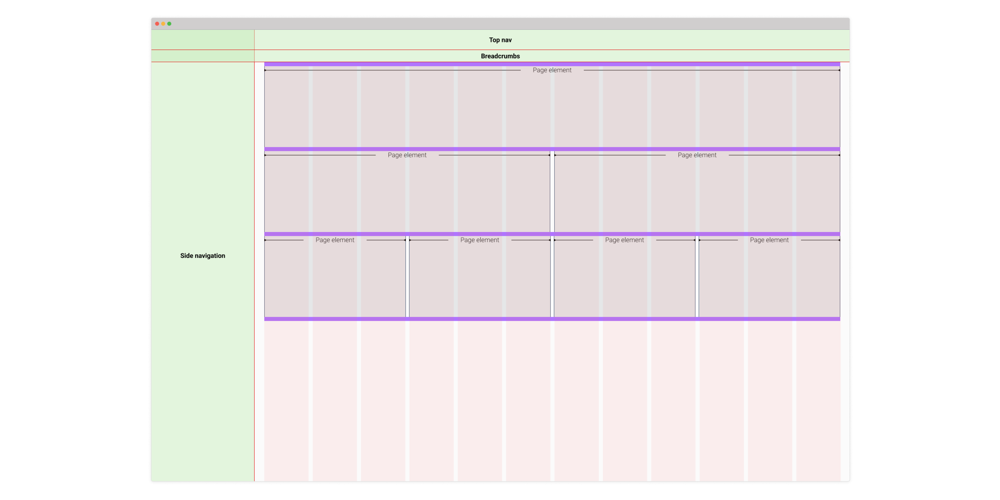
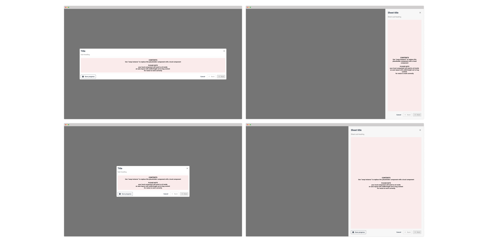

Client: Recursion (Exscientia) // Duration: 9 months
One of the world’s biggest biotech firms, Recursion (Exscientia) is using AI and big data processing to accelerate drug discovery and development.
I led the product design for an internal platform called Chemist which would simplify the highly complex process, while allowing decision capture from the users at key strategic points.

Jim freelanced with us for an extended contract, joining a newly-formed Product design team.
Despite the extremely challenging brief, and whilst grappling with a highly complex domain and fluctuating programme direction, he’s absolutely thrived.

Disclaimer: Recursion (Exscientia) are at the cutting edge of AI and drug design and most of what I worked on for them is heavily NDA-ed so there is a limit to what I can show and talk about below.

Overall the work I did with Recursion (Exscientia) was a huge success.
However, as a team of product designers we did occasionally encounter some challenges.
Below, I share 3 of those key challenges and my role in mitigating them.
The product I was working on was one of three the company was working on. Development across all three was very siloed, but users moved between the tools regularly as part of their day to day workflow.
The engineering team had previously decided to use the Google Material Library, however a lack of any design standards meant it was was implemented very differently by different people. At different times. On different features.
Similarly, where Material did not provide out-of-the-box components, engineering teams had created their own UI solutions, often solving the same issue across different platforms in different ways.
Lastly, while there were some very high level brand assets in place, these gave very little direction in terms of how that brand might be applied to complex web applications.
As a result there was a lack of continuity between the tools (and within tools) which was the root of many of the usability issues I observed.
Working closely with the Head of Product I identified the most regularly used design patterns across all three applications.
For each of these patterns, I took a deeper dive into what smaller atomic level design elements they were comprised of.
This gave us a simple road map of where I could make small changes which would cascade through all three applications, giving us the biggest bang for our buck.


Through preference testing early design work I showed these resulted in a better experience for our users, so these were fed into the enginering backlog.
As I progressed through our roadmap, I began to have confidence that the lower lovel atomic elements were been successfully implemented, so e began looking at using those low level elements in progressively higher level design patterns such as navigation and modals.
I led an initiative to work with Design Tokens. The workflow was complicated, but ultimately allowed us to make changes in our Figma files, and then via a couple of automated process to deploy these changes into the code base and immediately see changes to the interface.
Recursion (Exscientia) is steeped in sophisticated computational and life-sciences expertise. As such, the culture was heavily biased to value engineering expertise, and engineers themselves were motivated to solve the biggest and most complex coding challenges in the most elegant way.
Product design was seen as a poor relation to the “glamour” work of engineering.
Initial expectations were that the product design team would “colour in” engineering work but not make any fundamental changes.
There was also a lack of user research and testing: End of sprint showcases tended to be an echo chamber where most complex or cleverly-engineered features were valued over the ones which improved usability.
Consequently encouraging engineers to implement simple interface changes was a challenge.
Firstly, I spoke to engineers about how much more our role encompassed, and how our skills might actually help them.
I gave presentations, to talk specifically about some of the things Product and UX design could offer citing examples from industry which were relevant.
I began running user-testing sessions, and encouraged engineers to attend so they could hear first hand where the actual (rather than perceived) issues were.
I also ran workshops, to dive deeper into the issues identified in user testing. I encouraged co-design, to get engineering input and buy-in to potential solutions, rather than just throwing wireframes over the fence.
Lastly, I listened to the engineers. Specifically to understand the technical or political constraints they faced. And I made sure I designed solutions that worked within these boundaries.
As I user tested more frequently, the engineers began to see the increased user value in what they were building. In turn this encouraged further buy-in when I began the process again with the next feature.
Although the company was extremely mature in terms of running Agile sprints, they were missing a few key roles to really get the most of the Agile process.
Additionally, there was no clear product roadmap: Engineering effort was prioritised randomly, and varied depending on what was happening at the start of each sprint.
Additionally, there were no KPIs around customer engagement. Stakeholders were poorly defined and largely siloed to each platform.
Finally, any efforts to collaborate on shared effort initiatives were difficult to co-ordinate. Each team was running at pace towards it’s own abstract feature set.
These features were defined in isolation and there was very little coherence between them from a user perspectivce. Similarly
In truth this was a hard nut to crack. From the beginning myself and the other product designers recognised the value a dedicated Product Management function would bring to the process.
However this represented a significant investment for the business, and they understandably needed to carefully consider this (they did eventually end up recruiting this team).
In the meantime I filled the gaps as best I could by engaging with stakeholders and producing simple product roadmaps.
Where I could I defined KPIs and success metrics and, created internal processes.